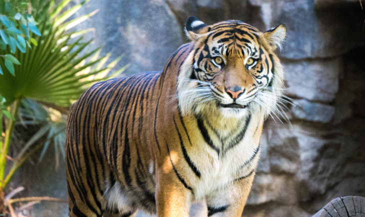
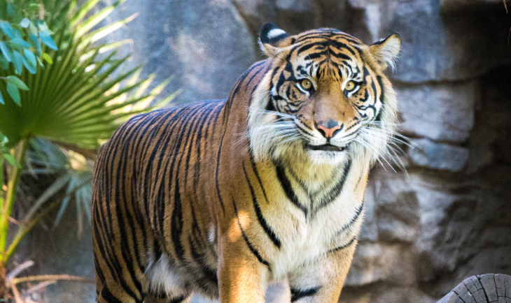

トラ

トラは、哺乳綱食肉目ネコ科ヒョウ属に分類される食肉類。頭胴長（体長）140-280センチメートル。尾長95-119センチメートル。メスよりもオスの方が大型になる。北部の個体群が大型で、南部にむかうにつれ連続的に小型になる傾向がある。インドやロシア極東部の個体群は大型で、スマトラ島の個体群が最も小型。腹部の皮膚は弛んで襞状になる。背面は黄色や黄褐色で、黒い横縞が入る。

トラは、哺乳綱食肉目ネコ科ヒョウ属に分類される食肉類。頭胴長（体長）140-280センチメートル。尾長95-119センチメートル。メスよりもオスの方が大型になる。北部の個体群が大型で、南部にむかうにつれ連続的に小型になる傾向がある。インドやロシア極東部の個体群は大型で、スマトラ島の個体群が最も小型。腹部の皮膚は弛んで襞状になる。背面は黄色や黄褐色で、黒い横縞が入る。